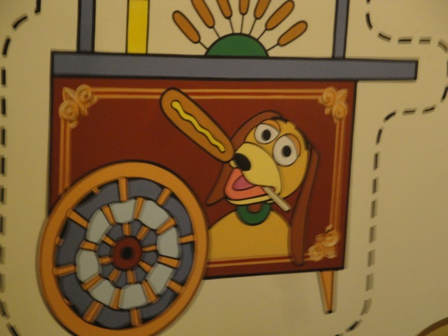
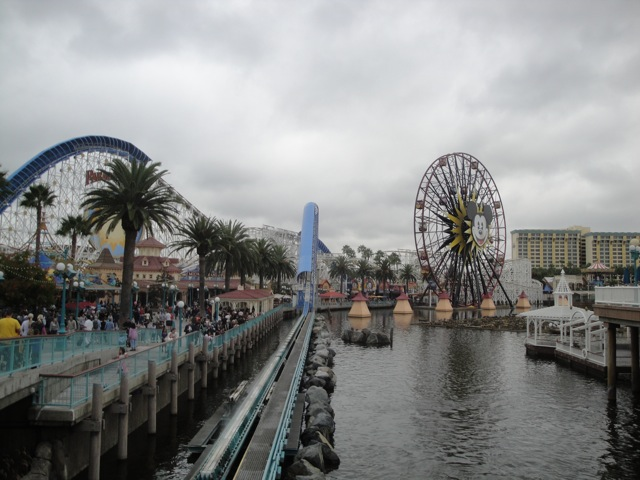
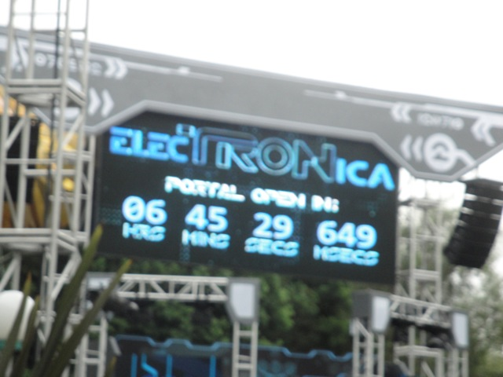
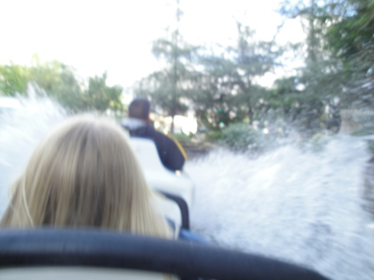
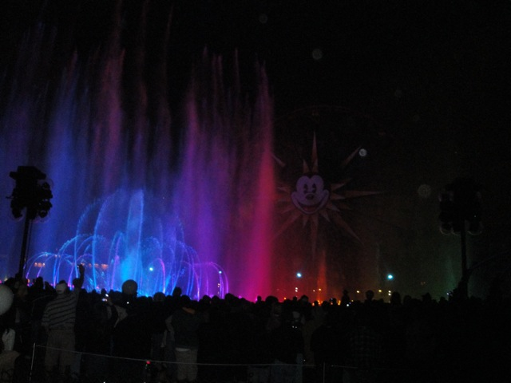
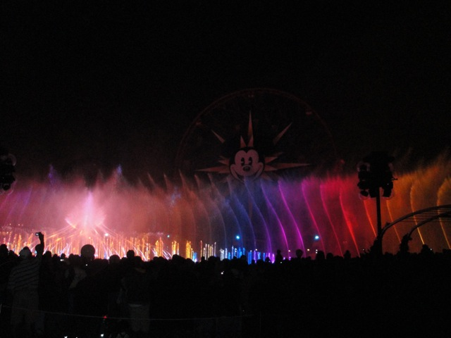
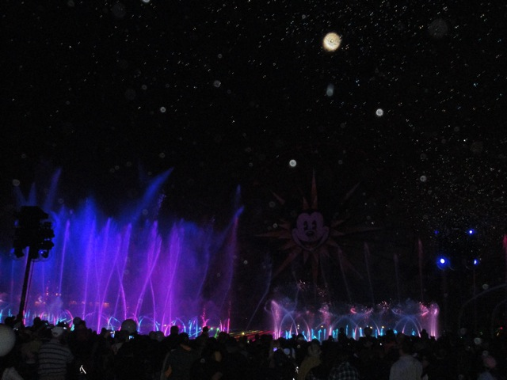
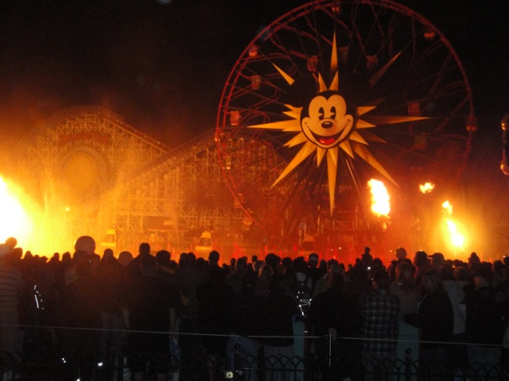

Fall 2010 Photos
Disneyland Resort Six Flags Magic Mountain
Well, October has come once again, and as always, it's time for our Fall "Insert Year Here" Photos Update. This year, we'll be starting off with some fun at the Disneyland Resort.
Ok, time to get our World of Color Fastpass. (You know a show is good if I actually bother to watch it two visits in a row.)
All right. How about to start off this day, we take a ride on Toy Story Mania.

"Congratulations on your high score Kevin. You have won a nice painted to the wall corn dog."
 All right. That's enough dark ride fun. I need a roller coaster to ride.
All right. That's enough dark ride fun. I need a roller coaster to ride.
 Ahh. Now I am satisfied.
Ahh. Now I am satisfied.

Hmm. Something appears to be missing here. But I just can't figure out what.
Oh yeah. They have officially taken down Maliboomer. This is all that's left. (Sorry about the blurry photo, it was taken while on California Screamin.)
All right. Let's see how construction on Carsland is going.
I have no idea what this is, all I know is that they're making progress. YAY!!! =)
I'll be watching you Carsland. Hopefully, I'll see more construction next time.
 Ok, time for a snack. And as always, the best snack is a free snack.
Ok, time for a snack. And as always, the best snack is a free snack.
"OH MY GOD!!!!! I THINK I CAN SEE JESUS IN MY TORTILLA!!!!!!!"
 Time to get my fill of airtime in for the day.
Time to get my fill of airtime in for the day.
Why can't Tower of Terror always have a line like that?

I have no idea what Electronica is, but somehow, I doubt it will be a World of Color buster.
Ok. That's enough California Adventure for now. Time to head on over to the Disneyland Resort.
Yay! Something to look foreword to in 2011!! (Aside from Green Lantern, Backwards Superman, Windseeker, Little Mermaid, and everything on my 2011 Trip.)
I was so satisfied with this place last time, that I decided to make a return visit to this place for lunch.
I dropped my chicken skewer in my lap. =(
 "Holy Sh*t!!! It got crowded!!! Why can't it be like California Adventure was this morning!!!!?"
"Holy Sh*t!!! It got crowded!!! Why can't it be like California Adventure was this morning!!!!?"
All right. In true halloween spirit, we decided to take a ride on Haunted Mansion Holiday.
Meh. My halloween decorations are way scarier.
HA HA!!!!!! SPLASH MTN GOT STUCK!!!!!!
 It's been way too long since my last Dole Whip. And like I remembered, they were awesome.
It's been way too long since my last Dole Whip. And like I remembered, they were awesome.
 Hey other side of Matterhorn, THINK FAST!!!!!
Hey other side of Matterhorn, THINK FAST!!!!!

Oh yeah. I forgot to tell you Celeste. That's not water. It's battery acid.
Somehow, I get a feeling that giving these people guns was a terrible mistake.
 Oh yeah. We almost completely forgot about Ghost Galaxy Space Mtn!!!! =)
Oh yeah. We almost completely forgot about Ghost Galaxy Space Mtn!!!! =)
 We at the Disneyland Resort are happy to send all you civilians into space without any sort of space training at all. Enjoy this experience of a lifetime. (Oh, and look out for that fire monster that will certainly kill you.)
We at the Disneyland Resort are happy to send all you civilians into space without any sort of space training at all. Enjoy this experience of a lifetime. (Oh, and look out for that fire monster that will certainly kill you.)
Our friends at NASA say that the Fire Monster came from this planet, which looks like a radioactive Jupiter. Hmm. Must be getting his power from the Radiation.
Celeste: "What's the point of being excited about Ghost Galaxy Space Mtn? It'll just be Regular Space Mtn before we know it. God, I'm so depressed that I think I'll go cry myself to sleep tonight." Kevin: "Bullsh*t! You're just scared of the Fire Monster and don't want to look in his eyes." Celeste: "Shut up!!!"
 Meanwhile at California Adventure, we still have yet to try the Silly Swings.
Meanwhile at California Adventure, we still have yet to try the Silly Swings.
Silly Swings is actually a really good chairswings ride.
"Why did they think this would go well inside a giant orange again?"
You know, I thought it would be a jaw dropping shock to not have Maliboomer in the California Adventure Skyline, but it actually looks really nice here. It almost feels like it was never here at all.

Anyways, time to watch World of Color again.

This time I could actually take stills of the show since I filmed the entire show last time.
"Are you there god, it's me, Ariel. I know you're busy and all, but could you please make sure that my new for 2011 dark ride is a success? That would really make me happy. Thanks. Oh yeah, and I want to be a human. I tried making a deal with Ursula, and it didn't go out as I planned. So I want some legs as well. Your #1 mermaid fan, Ariel."

Hey!! I don't recall there being any bubbles last time I saw World of Color!!! (I know I'm right!! I filmed it for gods sake!!)
Something tells me that things are going to go wrong here.

Ok!!! Who set the lake on fire again!!! Smokey Bear would be ashamed right now.
Six Flags Magic Mountain
Home